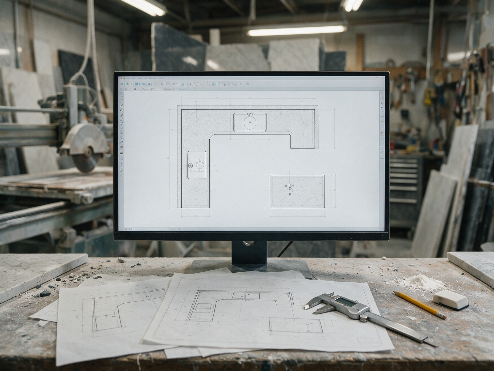
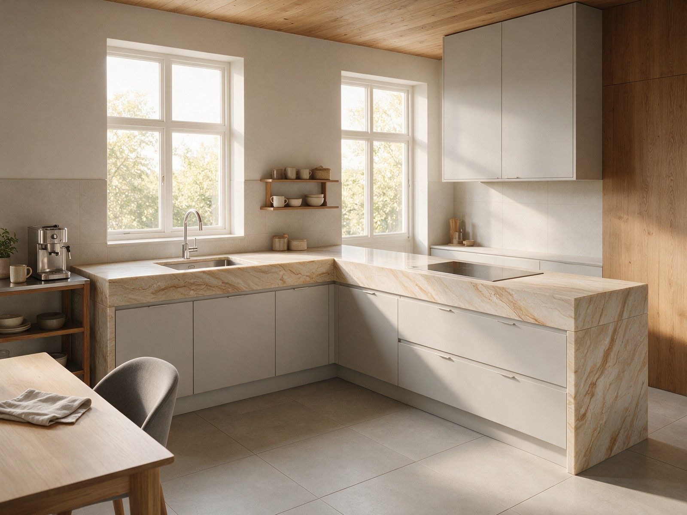
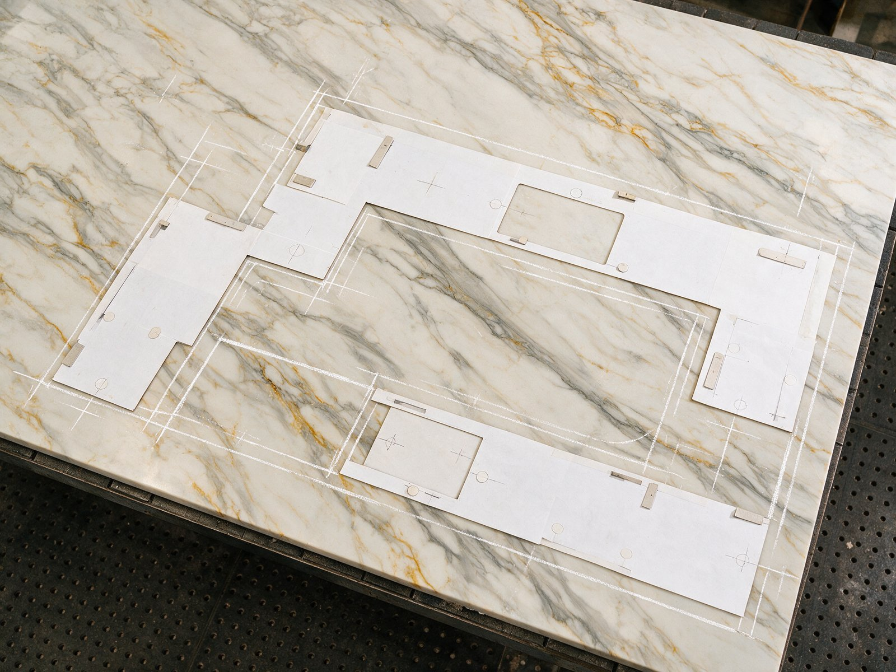

By the Editorial Team | Published: September 2026 | Last Updated: September 2026
How the Template Becomes an Actual Piece of Stone
Slab layout is the step where the measured template gets positioned on an actual slab and the fabricator decides how the counter pieces will be cut. This is where several important decisions get made: which slabs to use for which pieces, how the veining will orient across the finished counter, where seams have to fall, and how much material will be used versus wasted. The layout phase is short (typically 1 to 2 days after slab selection) but the decisions made in it shape the finished aesthetic more than any other single planning step.
Most homeowners do not see the layout process directly, but the layout decisions affect what they see every day after installation. A well-planned layout produces a counter with intentional veining orientation, invisible or well-placed seams, and clean piece-to-piece transitions. A poorly-planned layout can produce a counter that reads as inconsistent or accidentally arranged even though every individual piece is beautifully cut. Understanding what the layout phase does helps homeowners engage with the process productively.
The Layout Process Step by Step
Layout planning happens after slab selection. The fabricator has both the measured template (from field measurement) and the specific slabs the homeowner has selected. The layout step brings the two together and produces a cutting plan.
| Step | What happens | Who's involved |
|---|---|---|
| Slab review | Fabricator inspects each selected slab for defects, veining pattern, and usable area | Fabricator |
| Preliminary layout | Template positioned on slab, initial seam positions proposed | Fabricator |
| Homeowner viewing | Homeowner sees the layout planned on the actual slab | Homeowner + Fabricator |
| Adjustments | Layout refined based on homeowner preference on veining orientation | Fabricator |
| Final approval | Homeowner signs off on the final layout | Homeowner |
| Cutting | Fabricator marks cut lines on the slab and begins fabrication | Fabricator |
Veining Orientation Decisions
The most important layout decision is how the veining on the slab is oriented relative to the finished counter geometry. The same slab can be laid out multiple ways, and each way produces a different aesthetic result. Understanding the options helps homeowners make informed choices rather than accepting the fabricator's default.
For directional veining (linear vein patterns), the choice is usually between running the veining lengthwise along the counter or crosswise across it. Lengthwise veining reads as flowing and continuous. Crosswise veining reads as more segmented and articulated. Neither is wrong, but the choice needs to be intentional.
For random or organic veining (irregular patterns without clear direction), the layout choice is where the dramatic vein features fall. A slab with a striking dark vein through the center can position that vein at the focal point of the counter (typically an island or a prominent counter run) or push it toward less-visible areas depending on aesthetic goal.
For book-matched pairs (two slabs cut to mirror each other), the layout has to position the two slabs so their veining pattern continues across the seam or corner where they meet. This is a demanding layout that requires precise cutting; getting it wrong destroys the design intent of the book-match.

Common Veining Decisions Worth Discussing
- The main visual line: which direction the veining runs as the eye enters the kitchen.
- Focal features: where dramatic veining features are positioned for maximum impact.
- Seam continuity: whether veining continues across seams (harder but more resolved) or breaks at seams (easier but more visible).
- Sink and cutout treatment: how the veining reads around cutout areas that will be visible from above.
Reputable fabricators walk homeowners through these decisions rather than making them silently. The homeowner's aesthetic preference matters here in ways it does not for structural decisions.
Yield Planning: Getting the Pieces From the Slabs
Yield is the amount of usable material extracted from each slab. Every slab produces some waste (offcuts, defects, unused edges), and yield planning is the discipline of maximizing the usable output from the material purchased.
Standard yield on a slab depends on the slab dimensions, the counter geometry, and how well the pieces can be nested. Simple rectangular counter runs on rectangular slabs produce high yield (typically 75 to 85 percent). Complex geometries with cutouts and unusual shapes produce lower yield (60 to 75 percent). Poor layout planning can produce even lower yield, which affects both cost and the number of slabs required.
Yield affects the homeowner in two ways: cost (more waste means more slabs purchased) and seam count (lower yield sometimes forces additional seams). Fabricators with strong yield planning skills produce more finished counter per slab, which either reduces cost or reduces seam count depending on the specific project constraints.
Slab Selection Considerations
Slab selection happens before layout but influences layout heavily. Homeowners select slabs at the fabricator's yard or at a stone distributor, typically choosing 2 to 4 slabs for a residential kitchen depending on the counter dimensions and the veining considerations.
Considerations at slab selection include: the overall color and pattern (does the stone match the homeowner's aesthetic vision), the veining density (how much dramatic pattern versus calmer pattern), the presence of any defects (small imperfections, healed cracks, mineral inclusions), the slab dimensions (is this slab large enough for the intended piece), and the color match across the slabs (if multiple slabs will be used, do they read as consistent).
Homeowners benefit from viewing slabs in daylight rather than under fluorescent yard lighting because the color and pattern read differently under different lighting conditions. Reputable stone yards allow the slabs to be moved to good light for viewing.
Nesting Complex Geometries
Some kitchens have geometries that require careful nesting to produce clean results. L-shaped counters, U-shaped counters, and counters with multiple angles all present nesting challenges beyond the standard straight run.

L-shaped counters typically place the corner piece with the miter or seam at the inside corner where the two runs meet. Getting the veining to continue across this corner (if using book-matched or continuous-vein layout) requires careful planning. Alternatively, the seam can be placed at the corner and the two pieces treated as separate design moments.
U-shaped counters (three connected runs) usually require at least two seams and often three. The seam placement decisions determine which corners have visible joints and which read as continuous. In some cases, the U-shape can be produced from a single very large slab with no interior seams; in others, the slab size dictates that seams have to fall in specific positions.
Kitchen islands often benefit from being cut from a single slab piece if possible, producing a monolithic top with no interior seams. Very large islands (more than 3 meters in the long dimension) may exceed even the largest available slab, requiring a well-planned seam near a natural break in the geometry.
What Homeowners Should See at the Layout Viewing
The layout viewing is the homeowner's opportunity to see the plan before it becomes final. Reputable fabricators show the homeowner the actual slab with chalk marks or projected patterns indicating exactly where each piece will be cut. The homeowner should see:
- The slab in its actual state, not a photograph or digital rendering.
- The template positions marked on the slab with chalk or projection showing each piece's location.
- The veining orientation for each piece, so the homeowner can see how the finished counter will read.
- The proposed seam positions, so the homeowner can approve or ask for changes.
- The offcut areas, so the homeowner understands the yield and whether more slabs might be needed.
This viewing typically takes 30 minutes to an hour and results in either approval to proceed or requested changes that go back for revision. Skipping this viewing (letting the fabricator cut without homeowner approval) is a common source of aesthetic disappointment at installation.
Frequently Asked Questions
Can the layout be changed after slab selection but before cutting?
Yes, as long as it happens before the actual cutting begins. Layout changes at this stage are typically no-cost because no material has been consumed. Changes after cutting has begun (moving a seam position, reorienting the veining, adjusting a piece dimension) may require additional material and may not be possible depending on what has already been cut.
What happens if the homeowner does not like the veining on the delivered slabs?
The homeowner can typically reject slabs that do not match their expectations and select different ones. This works best when done at slab selection rather than at layout viewing, because rejecting slabs at layout time means restarting the selection process and delaying the fabrication schedule. Fabricators generally work with homeowners on this rather than forcing a specific slab, because a dissatisfied homeowner is worse than a schedule delay.
How many slabs does a typical residential kitchen require?
Depends on the counter dimensions and the layout. A modest residential kitchen (25 to 35 linear feet of counter) typically requires 2 to 3 slabs. A larger kitchen (40 to 60 linear feet) typically requires 3 to 5 slabs. A very large custom kitchen with an island, extensive perimeter counter, and multiple bar overhangs can require 5 to 8 slabs. The fabricator calculates the specific slab count based on the template and yield planning.
Does the layout plan get documented anywhere?
Yes. Reputable shops document the approved layout with photographs of the slab with marks, a digital layout file showing piece positions, and written notes on any specific homeowner preferences. This documentation becomes the reference during fabrication and helps prevent misunderstandings between the layout approval and the actual cutting.
Can multiple slabs be used with different veining patterns intentionally?
Yes, and it can produce interesting design results in the right context. A perimeter counter in one variant of a stone and an island in a related but distinct variant can read as intentional design rather than mismatch. The decision requires careful planning and clear discussion with the fabricator; treating it as an accidental mismatch produces worse results than committing to it as a design move.
What is the difference between book-matched and sequential layout?
Book-matched slabs are cut from the same block and positioned as mirror images, so their veining continues across the joint as if the piece was folded open. Sequential slabs are cut from the same block in order but not mirrored, so their veining is similar but not mirrored. Book-matching produces the dramatic continuous-vein effect on waterfall edges and mitered corners; sequential layout produces coordinated but not identical pieces.
Does the layout planning cost extra beyond the fabrication?
Typically no. Layout planning is part of the standard fabrication service and is included in the quote. Fabricators who charge separately for layout planning are unusual; the layout work is expected to be part of the base service. Very complex layouts (book-matched waterfall islands, custom pattern-matched work) may add a small planning fee separate from the base fabrication.
What happens to the offcut material after the counter pieces are cut?
Depends on the fabricator's policy. Some shops discard offcuts. Others save them for use on small custom pieces (side tables, bar tops, restaurant counter samples). Some offer offcuts to the homeowner for a modest fee, either to use for related small projects (matching shelves, bathroom vanities) or simply as sample pieces to have for future reference. Asking about the offcut policy at the layout viewing clarifies what happens to the material.
